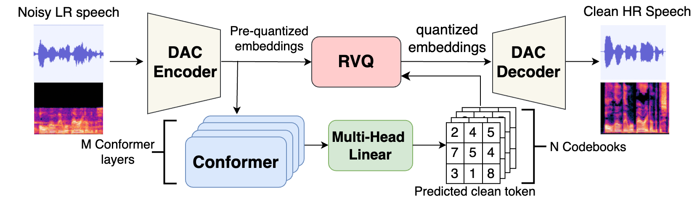

Abstract
Neural audio codec technology has recently attracted significant attention in various speech processing tasks due to its efficient quantized latent features. In this work, we introduce a novel approach that leverages a pre-trained neural codec network to perform both speech denoising and bandwidth expansion simultaneously. Specifically, we design a conformer-based deep neural network to predict clean codebook indices, which are then used by the pre-trained audio codec model to generate enhanced and bandwidth expanded audio. We investigate several strategies for generating the clean indices and compare our approach with state-of-the-art methods on the Valentini-Botinhao noisy test set. Experimental results demonstrate that our method achieves performance comparable to leading approaches in noise-robust bandwidth expansion tasks while offering promising improvements in the quality and intelligibility of narrow-band signals.

System overview of the proposed system. The system contains 2 parts: Descript Audio Codec (DAC) and clean token
predictor. DAC is consisted of DAC Encoder, Residual Vector quantization (RVQ) and DAC Decoder, and clean token predictor has
multiple Conformer layers and Multi-head linear layers.
Test Datasets
Valentini-Botinhao [1]: A synthetic data set.Audio Samples
Valentini-Botinhao dataset
| Samples | Noisy | proposed | Clean |
|---|---|---|---|
| Sample 1 | |||
| Sample 2 | |||
| Sample 3 | |||
| Sample 4 | |||
| Sample 5 |
Real recordings
| Samples | Noisy | proposed |
|---|---|---|
| Sample 1 | ||
| Sample 2 | ||
| Sample 3 | ||
| Sample 4 |